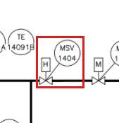
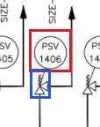
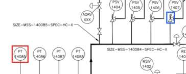
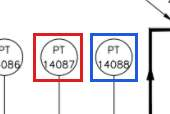
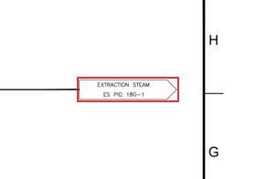
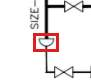
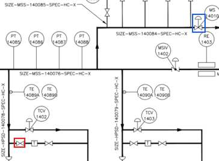
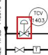
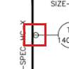

Statement review sample: Digital twin starter kit: site-drawing / supplied-extraction
A stratified random sample of 12 of 1087 statements (seed 1032). Strata: item (the items themselves: identity, attributes and other relations) 3/366, network (network layer: a drawn line network and what is attached to it) 2/222, network_pair (pairwise link: two items on the same drawn line network (the tracer's links)) 3/345, non_pipe (drawn lines that are not pipe: instrument connections and taps, actuator stems, nozzle stubs) 2/34, pipe (pipe layer: a pipe segment or pipe junction (what is piped directly to what)) 2/120
Supplied original file bytes bound: image for sheet 0. The full graph and available machine-check model are bound conservatively; any content change needs a new review. Hashes are not signatures or source verification.
Why this page exists. Everything this model says can be said as a plain
statement, and every statement points at where it came from: a box on a drawing sheet, a page of a report, a field of
a model. Checking a sample of statements against their sources turns “does this look right?” into a measured
error rate, and lets someone who knows the unit check it in plain language without reading JSON.
Two separate verdicts, never mixed.Matches its source: does the drawing box or report page say
this? Anyone can check that. True in the plant: is it actually so on the unit today? Only an operator, a
walkdown or live data can say, and only for a statement that matched its source (the second box stays locked until
the first says match). The “machine” line, where shown, only proves the export says what the model
says, not that the model is right.
H in SYS-0 · 1 statement(s)
H is attached to drawn line network S0-NET018.
connection · layer: network · st-5ec6fdc4bcfb
Source: drawing sheet 0, box [639, 242, 663, 281] (0-1000 scale); Recorded item appearances (not per-claim verification): 1: drawing sheet 0, box [639, 242, 663, 281] (0-1000 scale). Complete extraction records are in the bound JSON packet

Recorded item appearances
Original extraction context. These records do not establish that every appearance supports this claim or agrees with the others. One verdict still applies to this statement.
An instrument line, not a pipe, runs directly from PSV 1406 to untagged valve S0-VL011, with no junction or other item between.
connection · layer: non_pipe · st-788cc7ce129a
Source: no source of its own (the model's source document: OPEN100-0, revision public, page 1)

no source of its own: the line was traced, not read from a box. The crop shows both ends (red, blue) so you can follow it on the sheet
PT 14085 in SYS-0 · 1 statement(s)
PT 14085 and untagged valve S0-VL012 are on the same drawn line network (line network S0-NET007): lines, bends, junctions or crossings join them with no item between. This does not say a pipe runs directly from one to the other.
Source: no source of its own (the model's source document: OPEN100-0, revision public, page 1)

no source of its own: the line was traced, not read from a box. The crop shows both ends (red, blue) so you can follow it on the sheet
PT 14087 in SYS-0 · 1 statement(s)
PT 14087 and PT 14088 are on the same drawn line network (line network S0-NET007): lines, bends, junctions or crossings join them with no item between. This does not say a pipe runs directly from one to the other.
Source: no source of its own (the model's source document: OPEN100-0, revision public, page 1)

no source of its own: the line was traced, not read from a box. The crop shows both ends (red, blue) so you can follow it on the sheet
TE 14092A in SYS-0 · 1 statement(s)
TE 14092A is attached to drawn line network S0-NET022.
connection · layer: network · st-14b5b3c8bca0
Source: drawing sheet 0, box [538, 233, 838, 673] (0-1000 scale); Recorded item appearances (not per-claim verification): 1: drawing sheet 0, box [538, 233, 838, 673] (0-1000 scale). Complete extraction records are in the bound JSON packet
Recorded item appearances
Original extraction context. These records do not establish that every appearance supports this claim or agrees with the others. One verdict still applies to this statement.
off-page connector “EXTRACTION STEAM ES PID 180-1” (S0-OP001) in SYS-0 · 1 statement(s)
Off-page connector “EXTRACTION STEAM ES PID 180-1” (S0-OP001) leads to system ES.
connection · layer: item · st-871dabfa3b1f
Source: drawing sheet 0, box [768, 124, 838, 147] (0-1000 scale), read as “EXTRACTION STEAM ES PID 180-1”; Recorded item appearances (not per-claim verification): 1: drawing sheet 0, box [768, 124, 838, 147] (0-1000 scale), read as “EXTRACTION STEAM ES PID 180-1”. Complete extraction records are in the bound JSON packet

Recorded item appearances
Original extraction context. These records do not establish that every appearance supports this claim or agrees with the others. One verdict still applies to this statement.
1: drawing sheet 0, box [768, 124, 838, 147] (0-1000 scale), read as “EXTRACTION STEAM ES PID 180-1”
untagged general S0-GN013 in SYS-0 · 1 statement(s)
Untagged general S0-GN013 is an item drawn on a line.
identity · layer: item · st-16beb37ad80f
Source: drawing sheet 0, box [582, 396, 589, 403] (0-1000 scale); Recorded item appearances (not per-claim verification): 1: drawing sheet 0, box [582, 396, 589, 403] (0-1000 scale). Complete extraction records are in the bound JSON packet

Recorded item appearances
Original extraction context. These records do not establish that every appearance supports this claim or agrees with the others. One verdict still applies to this statement.
Untagged valve S0-VL003 and untagged valve S0-VL013 are on the same drawn line network (line network S0-NET007): lines, bends, junctions or crossings join them with no item between. This does not say a pipe runs directly from one to the other.
Source: no source of its own (the model's source document: OPEN100-0, revision public, page 1)

no source of its own: the line was traced, not read from a box. The crop shows both ends (red, blue) so you can follow it on the sheet
untagged valve S0-VL015 in SYS-0 · 1 statement(s)
Untagged valve S0-VL015 is classed as a valve by the extraction.
identity · layer: item · st-4370dd698497
Source: drawing sheet 0, box [455, 342, 464, 364] (0-1000 scale); Recorded item appearances (not per-claim verification): 1: drawing sheet 0, box [455, 342, 464, 364] (0-1000 scale). Complete extraction records are in the bound JSON packet

Recorded item appearances
Original extraction context. These records do not establish that every appearance supports this claim or agrees with the others. One verdict still applies to this statement.
instrument tap S0-JN-342-307 in the plant · 1 statement(s)
Instrument tap S0-JN-342-307 is the point on the drawing where TE 14089A's instrument line meets a pipe, which carries on through it (an instrument tap, not a pipe tee).
identity · layer: non_pipe · st-fae6f6afc30a
Source: drawing sheet 0, box [337, 300, 347, 315] (0-1000 scale); Recorded item appearances (not per-claim verification): 1: drawing sheet 0, box [337, 300, 347, 315] (0-1000 scale). Complete extraction records are in the bound JSON packet

Recorded item appearances
Original extraction context. These records do not establish that every appearance supports this claim or agrees with the others. One verdict still applies to this statement.